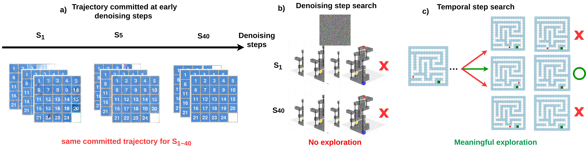
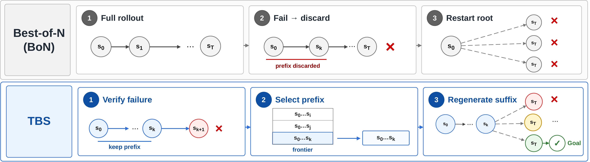

1Northeastern University · 2Independent Researcher · 3Harvard & Kempner · 4MIT · †Co-advisors
Generative video models are emerging as world simulators for sequential decision-making: by extracting action plans from generated rollouts, agents can plan and solve complex tasks entirely in imagination. In this setting, the relevant axis for scaling test-time compute is not aesthetic quality but trajectory correctness.
We identify two empirical bottlenecks that make existing test-time scaling paradigms fail. First, video models commit to a high-level spatial trajectory within the earliest denoising steps — adding compute to later steps cannot rescue a wrong plan. Second, reasoning failures cluster heavily in the early temporal stages — root-level Best-of-N (BoN) wastes its budget by repeatedly re-failing at the same bottleneck, discarding valid upstream progress each time.
We introduce Temporal Backtracking Search (TBS), which shifts the search space to the temporal axis via an iterative generate–verify–restart loop: verify the rollout, isolate the first failure, cache the valid prefix, and generate only the remaining suffix. Across algorithmic reasoning, continuous navigation, and robotic manipulation, TBS Pareto-dominates matched-budget BoN. In a strict out-of-distribution setting where single-shot generation collapses (0.7% for BoN-20), TBS achieves 22.7% — every solved episode from a restarted branch.
Test-time scaling transformed reasoning in language models, but the recipes that work there do not transfer to generative video. The standard moves — searching over denoising steps, or sampling many full rollouts and keeping the best (Best-of-N) — both assume the model can explore alternatives at the point where it went wrong. For video reasoning, neither assumption holds. We trace this to two empirical bottlenecks.
Denoising-step search
The spatial trajectory is committed at the very first denoising step — S1, S5, and S40 all produce the same plan. There is nothing left to search over.
✗ Wrong axis entirelyRoot-level Best-of-N
72–78% of failures occur in the first 20% of a rollout. Every independent resample replays the same early bottleneck — discarding the verified-correct remainder each time.
✗ Wastes verified upstream progressOne-shot generation, long horizons
Correctness must hold at every frame simultaneously. On 2D Maze paths of 41+ steps, single-shot BoN-1 reaches only 1.9% — errors compound multiplicatively as the horizon grows.
✗ Collapses with horizon lengthBottleneck 1 — the trajectory is decided early, in the wrong search space. If we decode the same noisy latent at successive denoising steps, the high-level motion plan is already fixed within the first few steps and never changes afterward. So spending more compute on later denoising steps cannot redirect a plan that was wrong from the start — the denoising axis simply has nothing to explore.

(a) The same noisy latent at S1, S5, S40: the motion plan is identical throughout — the trajectory is committed immediately. (b) Denoising-step search offers no trajectory exploration. (c) Temporal-step search does, by branching from verified prefixes.
Bottleneck 2 — failures cluster early, so blind resampling wastes the budget. Reasoning errors are not spread evenly along a rollout; they concentrate heavily in its opening frames. Because Best-of-N starts every candidate from scratch, it keeps re-failing in that same early region and throws away the correct frames it had already produced downstream. As the horizon lengthens, the probability that an independent rollout clears the bottleneck shrinks, and exact match collapses.
Cache the valid prefix. Branch from there. Repeat.
Both bottlenecks point the same way: stop searching the denoising axis, and stop throwing away verified frames. TBS reformulates video reasoning as inference-time search over the temporal axis. Instead of treating a rollout as one indivisible block, it isolates the first failure, keeps the verified frames before it, and spends compute extending that prefix — turning one long-horizon problem into a sequence of short, locally-easy continuations.
Sample candidate rollouts. For the first round, start from the initial frame; afterwards, continue from the highest-priority verified prefix anchor in the frontier.
A process verifier scans the rollout, finds the first failure frame, and returns the verified prefix before it plus a priority score — it localizes where the trajectory broke, not just whether it did.
Cache the verified prefix as a restart anchor, then regenerate only the invalid suffix from that anchor. Repeat until a rollout reaches the goal or the budget is spent.

BoN (top): one error discards everything; restart from frame 1. TBS (bottom): localize the first failure, cache the verified prefix as a restart anchor in a priority frontier, regenerate only the invalid suffix. Full-prefix conditioning (variable-K) preserves the motion context that a single-frame state reset loses entirely.
Three components make the loop work:
Standard video diffusion denoises all frames jointly from a single initial frame, so it cannot resume from an arbitrary prefix. We fine-tune the base model with a per-frame timestep mask: the first K latent frames are held clean while the suffix is noised. A progressive curriculum (K=1 → 20) teaches the model to treat any verified prefix as fixed context and regenerate only the continuation — at constant per-branch cost.
A process-level verifier returns the first failure frame, a restart anchor aligned to the VAE's latent boundary, and a priority score. It exposes a failure location and a restartable prefix, but never the correct continuation — the generator still has to synthesize the suffix. We instantiate it three ways: exact symbolic rules, a learned trajectory predictor, and a closed-loop physics simulator.
Verified prefixes live in a priority frontier. Each step pops the most promising anchor and samples a few suffix continuations, inserting any new valid prefixes back into the frontier. This best-first search over prefixes spends compute on extending correct trajectories instead of re-rolling from the root — depth-friendly domains repair late drift, width-friendly ones escape early dead states.
We evaluate across three regimes that span the realistic spectrum of process supervision — from exact symbolic rules to a learned noisy predictor to a closed-loop physics simulator. At matched compute budget, TBS Pareto-dominates Best-of-N in every regime.
Five rule-based grid-worlds where deterministic rules localize the first failure exactly. The gain tracks horizon length: tiny on already-saturated short tasks, large where rollouts are long. The clearest case is strict-OOD Keys-and-Doors, where every TBS solve comes from a restarted branch.
| Baseline (BoN) | Ours (TBS) | Gain | ||||
|---|---|---|---|---|---|---|
| Domain | Split | BoN‑1 | BoN‑20 | TBS‑10 | TBS‑20 | TBS‑20 − BoN‑20 |
| 2D Maze | Overall | 51.0 | 79.0 | 84.0 | 90.3 | +11.3 |
| Hard | 18.3 | 60.0 | 68.7 | 81.0 | +21.0 | |
| Sokoban | Overall | 41.5 | 82.0 | 77.7 | 82.7 | +0.7 |
| Hard | 37.0 | 78.3 | 73.0 | 79.7 | +1.4 | |
| Sliding Puzzle | Overall | 39.5 | 82.2 | 80.8 | 86.5 | +4.3 |
| Hard | 41.3 | 81.3 | 81.3 | 88.7 | +7.4 | |
| Keys-and-Doors | ID Overall | 52.3 | 97.7 | 96.5 | 99.2 | +1.5 |
| Strict OOD | 0.0 | 0.7 | 8.3 | 22.7 | +22.0 | |
Where do the solves come from? Of every episode TBS-20 solves, how many were already solved by a root rollout (depth 0) versus only after a restarted branch (depth ≥ 1). The longer-horizon domains lean heavily on restarts — and strict-OOD Keys-and-Doors is decisive: not a single solve comes from a root sample; all 68 come from restarted branches.
| Domain | TBS‑20 EM | Root d=0 | Restart d≥1 | Restart-added EM |
|---|---|---|---|---|
| 2D Maze | 90.3% | 357 | 185 | +30.8 pp |
| 3D Maze | 97.7% | 574 | 12 | +2.0 pp |
| Sokoban | 82.7% | 448 | 48 | +8.0 pp |
| Sliding Puzzle | 86.5% | 405 | 114 | +19.0 pp |
| Keys-and-Doors | 99.2% | 510 | 85 | +14.2 pp |
| Keys-and-Doors OOD | 22.7% | 0 | 68 | +22.7 pp |
Target-Bench tests whether the gains survive when the verifier is learned and noisy rather than an exact rule. TBS improves every one of the five trajectory metrics at both budgets, with the largest gains on miss rate and approach consistency — a noisy process signal is still enough to localize where a rollout drifts.
| Method | ADE ↓ | FDE ↓ | MR (%) ↓ | SE ↑ | AC ↑ | Overall ↑ |
|---|---|---|---|---|---|---|
| BoN-1 | 0.541 | 1.074 | 16.70 | 0.268 | 0.730 | 0.323 |
| BoN-3 | 0.300 | 0.765 | 4.05 | 0.407 | 0.817 | 0.424 |
| TBS-3 | 0.276 | 0.640 | 1.73 | 0.496 | 0.936 | 0.508 |
| BoN-5 | 0.265 | 0.680 | 2.70 | 0.466 | 0.872 | 0.473 |
| TBS-5 | 0.263 | 0.622 | 1.56 | 0.508 | 0.936 | 0.511 |
Generated videos are decoded to robot actions and replayed in a physics simulator. TBS helps when the base video model produces a repairable approach prefix — reusing the verified pre-grasp motion and regenerating only the failed contact window — but gains shrink under heavy visual randomization, where the base policy rarely reaches the target and there is little to repair.
| Baseline | Budget 3 | Budget 5 | |||
|---|---|---|---|---|---|
| Setting | BoN‑1 | BoN‑3 | TBS‑3 | BoN‑5 | TBS‑5 |
| Clean scenes | 35 | 46 | 50 | 49 | 53 |
| Randomized scenes | 6 | 15 | 16 | 17 | 18 |
Each clip shows BoN exhausting its budget and failing, followed by TBS backtracking to the failure point and succeeding from a restarted branch. Grouped by the same three regimes as the results above.
BibTeX will be added after the arXiv upload.